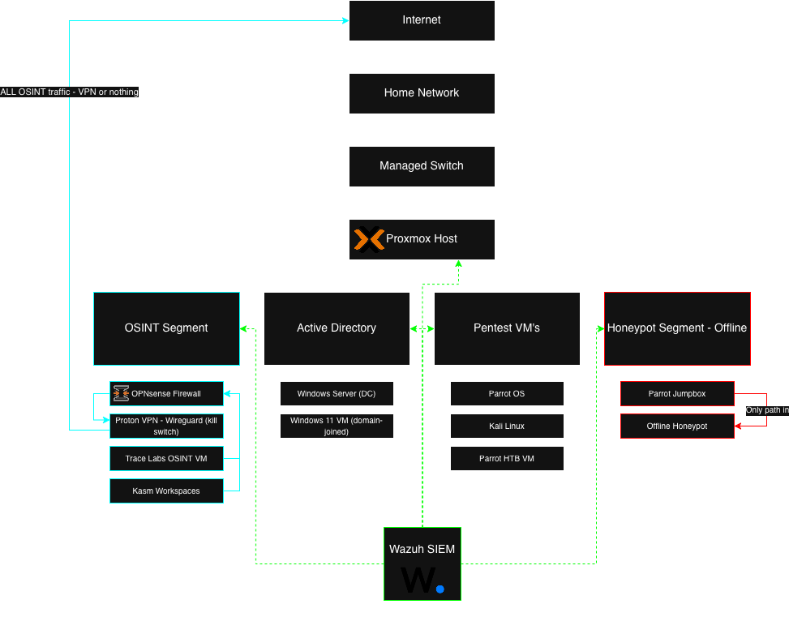
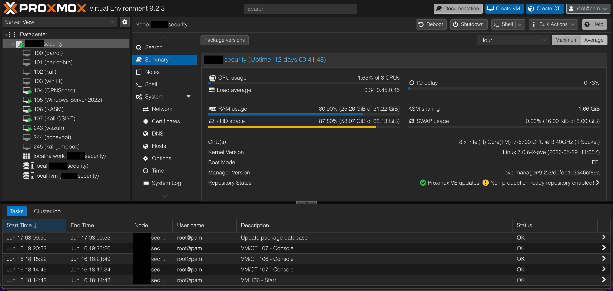
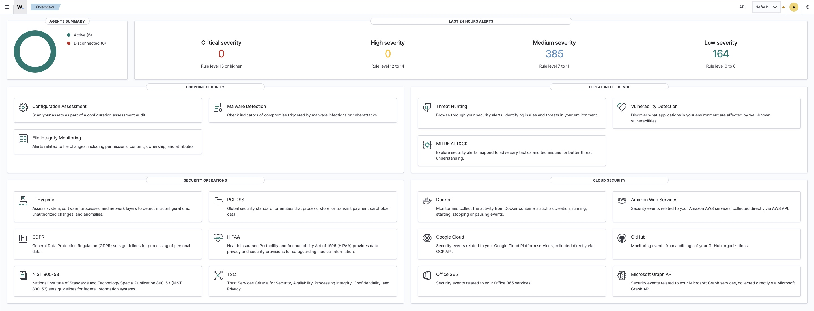
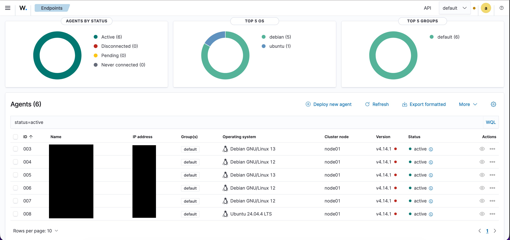

Introduction
At some point, reading about this stuff stops being enough. I wanted a place where I could actually run offensive tools, detonate the occasional malware sample, and watch what happens, all without putting my home network or anyone else at risk. So, as one does, I built a dedicated cybersecurity lab.

The whole thing runs on Proxmox as the virtualization layer. On top of that, I've got a handful of isolated VMs: Parrot and Kali for offensive work, a Hack The Box machine, a small Active Directory domain to attack and defend, an offline honeypot, an OSINT setup that routes through a VPN, and a Wazuh SIEM tying the defensive side together. This is a walkthrough of how it's laid out, what each piece does, and the decisions I made to keep all of it contained.
Hardware
Nothing exotic. An older i7 with 8 cores and 32 GB of RAM, running on an SSD, with the lab carved up into separate network segments (one of them completely offline for the honeypot).
Virtualization Layout
The lab is split into deliberately separated VMs so that offensive testing, vulnerable targets, OSINT, and monitoring never share the same space:
- Parrot OS - my primary pentesting workstation
- Kali Linux - a secondary pentesting VM with a different toolset
- Parrot HTB VM - dedicated to Hack The Box challenges
- Offline Honeypot - a vulnerable environment with no internet access and attractive (looking) files
- Parrot Jumpbox - the only VM allowed to reach the honeypot
- Windows Server - the domain controller for my Active Directory lab
- Windows 11 Vulnerable VM - a domain-joined and intentionally misconfigured target
- OPNsense - the firewall and gateway for my OSINT segment
- Kali/Trace Labs OSINT VM - my persistent OSINT workbench
- Kasm Workspaces - disposable browser-based investigation sessions
- Wazuh SIEM - logging and monitoring across the lab

The Machines & How I Use Them
Parrot OS - Primary Pentesting Workstation
This is my main offensive environment, loaded with the usual suspects like Nmap, Burp Suite, Metasploit, Wireshark, and many more tools. It's where I do recon, enumeration, and scanning, write attack scripts, run tests against the lab targets, and generally spend most of my training and certification practice time.
Kali Linux - Secondary Pentesting Environment
Kali is my alternate, with a slightly different toolset and workflow. I mostly use it to compare how tools behave against Parrot, to reach for Kali-specific utilities and wordlists, and to try out new tools in isolation before they ever touch my main machine.
Parrot Hack The Box VM
A VM I use only for connecting to Hack The Box. It keeps its own VPN profiles and stays dedicated to HTB boxes, which keeps that work cleanly separated from my primary workstation.
Offline Honeypot
This is an intentionally vulnerable Linux machine that lives on a network segment with no way out. I use it to safely run malware samples, test payloads and exploits, practice privilege escalation, and watch how a compromised system behaves. Keeping it offline is the entire point. If something nasty lands on it, there's nowhere for that something to go. No spreading, no phoning home to a command-and-control server.
Parrot Jumpbox - Gateway Into the Honeypot
The jumpbox is the only machine allowed to talk to the honeypot, so it acts as a controlled chokepoint. I SSH into the jumpbox from my local machine, and from there I can reach the honeypot. Routing everything through that single point is what keeps the contained mess contained.
Windows Server - Active Directory Domain Controller
This is the heart of my AD lab. The Windows Server box runs as a domain controller with the Windows 11 machine joined to the domain, which gives me a small but real Active Directory environment to work in. It sits on the lab network but isn't internet-facing.
I use it for both sides of the fence. On offense, it's where I practice the classic AD attack path: enumerating the domain, mapping it out with BloodHound, hunting for misconfigurations, and working through things like Kerberoasting and lateral movement toward domain compromise. On defense, it's where I get to see those same attacks from the other chair, tightening up GPOs, cleaning up the misconfigurations I just abused, and watching the whole thing light up in Wazuh so I can tell what an attack actually looks like in the logs. Getting to run an attack and then immediately hunt for my own footprints has probably taught me more than either side would on its own.
Windows 11 Vulnerable VM
A Windows box I purposely misconfigured and joined to the domain. I use it for privilege escalation, password harvesting, PowerShell work, endpoint defense testing, and as a foothold into the AD environment. Most security labs lean heavily Linux, so having a deliberately weak Windows target gives me the offensive Windows reps that may harder to get otherwise.
OPNsense - OSINT Segment Gateway
OPNsense runs as the firewall and gateway for my OSINT segment, walling that investigation traffic off from the rest of the lab and from my home network. The important part is that it pushes all of that segment's outbound traffic through ProtonVPN over WireGuard, with a kill switch behind it. If the tunnel ever drops, the firewall just stops passing traffic instead of quietly falling back to my real connection. So anything I do from the OSINT VMs either leaves through the VPN or doesn't leave at all.
Kali/Trace Labs OSINT VM - Persistent Workbench
This is my long-lived OSINT environment, built on the Trace Labs OSINT VM (a Kali-based build put together specifically for open-source intelligence and their missing-persons CTFs). Because it's persistent, my tools stay installed and configured between sessions, which is what I want for the heavier, ongoing investigation work. All of its traffic heads out through OPNsense and the VPN.
Kasm Workspaces - Disposable Sessions
Kasm gives me throwaway, browser-based sessions that spin up clean and get torn down when I'm finished. When I need a browser that carries no history into the next investigation and leaves nothing behind, this is what I reach for. It routes through OPNsense and the VPN just like the persistent workbench, so even the disposable sessions get the same isolation and anonymity.
Wazuh SIEM
Wazuh is the defensive backbone. It watches logs, attacks, and system behavior across the lab and alerts me when something stands out. I set up the Wazuh Manager and Dashboard, then deployed agents across Proxmox, my containers, and the key VMs. It keeps an eye on file integrity, authentication logs, rule-based triggers, honeypot activity, and Windows event logs, including the domain controller, which is what lets me watch my AD attacks play out from the defensive side. This is the side of the lab where I get to practice detection engineering and threat monitoring rather than just attacking things.


Security Practices
The layout only helps if I'm disciplined about how I run it. The rules I stick to:
- No pentesting VM touches the internet during exploit testing
- The honeypot stays fully isolated with no external routes
- The AD environment stays on the lab network and never faces the internet
- The jumpbox is the only path in, which prevents lateral movement
- OSINT traffic is forced through a VPN tunnel with a kill switch, so nothing leaks if the tunnel drops
- Wazuh handles detection and alerting across everything
- Snapshots before any major testing so I can roll back cleanly
- Strong passwords and 2FA wherever it's available
- No real-world targets, ever. Strictly internal lab
What I Learned
Building and running this taught me more than any single course could:
- Virtualization and network segmentation
- Offensive testing methodology
- Active Directory attack paths and how to defend against them
- Windows and Linux privilege escalation
- Routing traffic through a VPN with a proper kill switch
- Malware behavior analysis in isolated environments
- SIEM configuration, rule tuning, and alerting
- Safe handling of vulnerable systems
- Logging, monitoring, and endpoint hardening principles